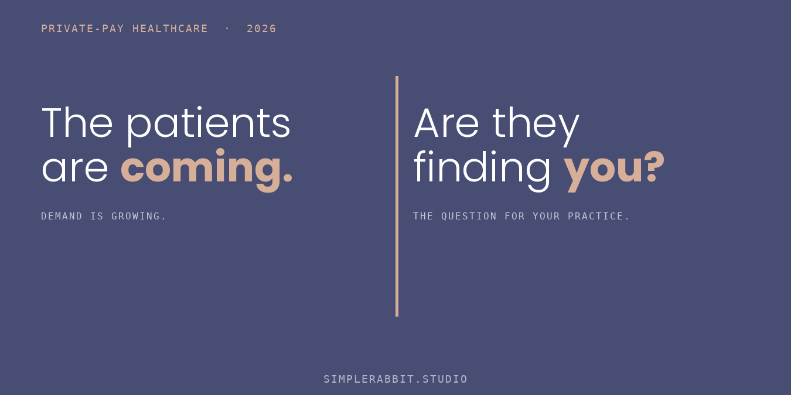
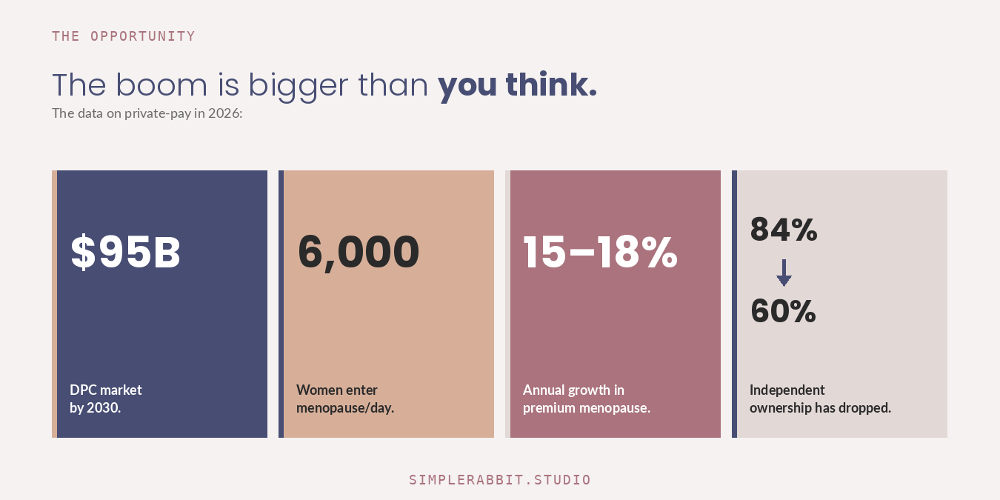
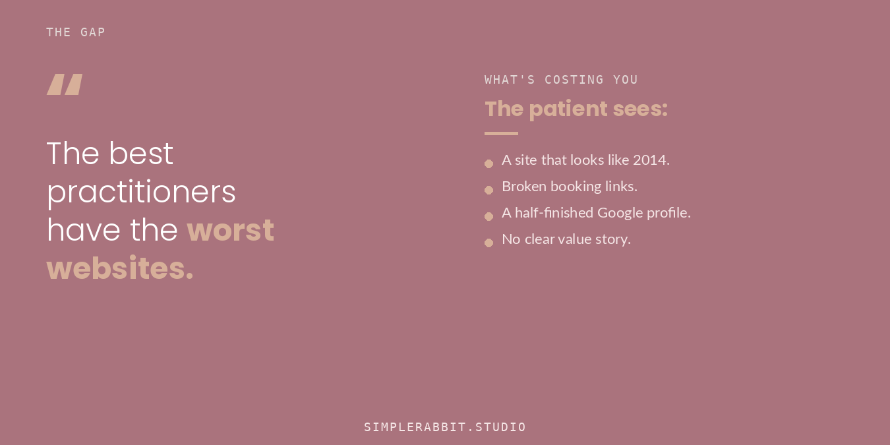
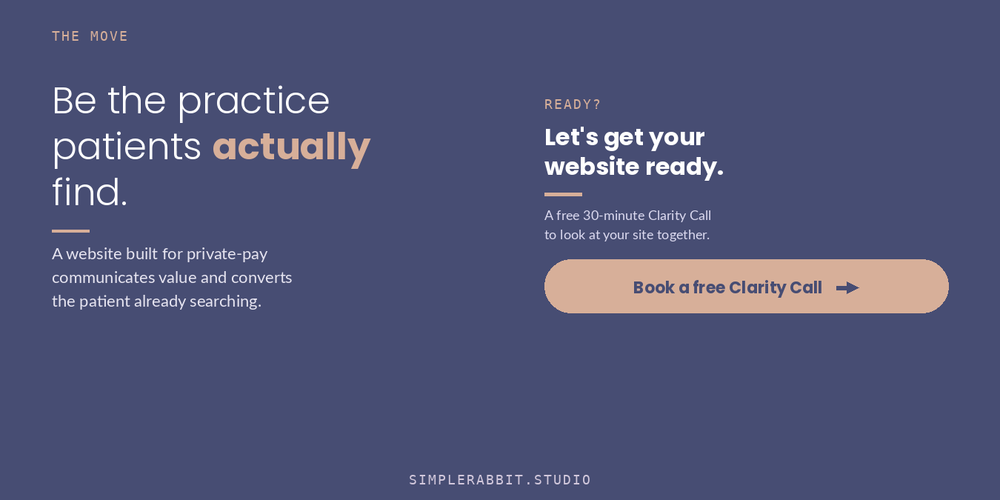

The average American family now spends about $26,000 a year on healthcare. That’s more than most families spend on their mortgage or their groceries. And a lot of that money is being spent on care they don’t even particularly like.
Something is shifting because of it.
Patients are starting to walk away from the insurance system on their own. Not all of them. Not most of them. But enough of them, and enough of the ones who can pay for the care they want, that an entire category of practice has grown up around them. Direct primary care. Concierge medicine. Functional medicine. Holistic gynecology. Private-pay specialty work. Different labels, same underlying idea: a practice that doesn’t bill insurance and doesn’t pretend to.
If you’re a practitioner thinking about leaving the insurance system, or already out and trying to make it work, this is what’s actually happening around you.

The market is bigger than most people realize
The direct primary care market was $70.17 billion in 2025, and the Business Research Company expects it to reach $95.43 billion by 2030. That’s a 6.2% compound growth rate, which doesn’t sound dramatic until you remember what most of healthcare is doing right now (shrinking margins, consolidation, burnout).
What’s driving the growth isn’t a single thing. It’s the same five forces showing up everywhere in primary care: insurance overhead that eats half the day, physicians burning out faster than they can be replaced, patients who can’t get a real appointment, appointment slots that have shrunk to seven minutes, and a primary care shortage that’s getting worse instead of better. Direct primary care doesn’t fix all of that. But it removes the part most practitioners and most patients hate the most, which is the insurance middleman.
When you remove the middleman, the relationship between practitioner and patient gets cleaner. The pricing gets transparent. The visits get longer. The patient who walks in already understands what she’s paying for.
That’s the model that’s growing.

2026 quietly removed the biggest barrier
Most practice owners don’t know this, but in 2026, federal guidance changed to make direct primary care membership fees eligible as HSA-qualified medical expenses. Accresa covered the change in February, and it’s been one of the more significant policy shifts for private-pay practices in years.
Here’s why it matters. For a long time, the conversation with a patient considering a private-pay practice ended at the same wall: “I’d love to, but I can’t use my HSA dollars for it.” Now she can. The same dollars she was already setting aside for healthcare can pay for membership-based care. The financial logic for the patient just got significantly cleaner, and the financial story you tell on a sales call or a website got cleaner with it.
If you’ve been holding off on going private-pay because you weren’t sure the financial model would work for your patients, this is the thing that changed.
Doctors are leaving the corporate system in waves
The Medical Group Management Association tracks ownership patterns across independent primary care practices. Their numbers from the last several years tell a story that doesn’t get talked about much: independent ownership of primary care practices has dropped from around 84% to 60%, and the number of corporate-affiliated practices has grown by 576%.
That’s not a typo. Five hundred and seventy-six percent.
Most of those practitioners didn’t leave because they wanted to work for a corporation. They left because the math of running an independent insurance-based practice stopped working. And now, a steady portion of them are leaving the corporate system too, but this time, they’re not signing onto another payroll. They’re building private-pay practices instead.
The MGMA data shows a clear pattern: concierge medicine and direct primary care are the two fastest-growing categories of practitioner-owned practices. People who already burned out of insurance and burned out of the corporate replacement are choosing a third option. One where they own the practice, set the pricing, and decide how long the visit lasts.
It’s not a coincidence that nurse practitioners are right behind them. NEXT Insurance ranked nurse practitioners as the third-fastest-growing occupation in the United States in their 2026 small business report, with employment projected to grow 35% from 2024 to 2034. The country is heading toward a projected shortage of 63,720 full-time nurses by 2030, and a meaningful percentage of the NPs entering practice are doing it under their own license, in their own clinic, on their own terms.
Women’s health is where the biggest gap is
The clearest example of all of this is women’s health, and specifically menopause care.
Around 6,000 women in the United States enter menopause every day, according to Grand View Research. About 90% of them experience symptoms that affect their work and their daily life. Nova One Advisor estimates that 50 million American women are currently in or approaching menopause. IndexBox puts the core demographic of women aged 45 to 64 at roughly 55 million people in 2026, and notes that the premium and clinical-grade segment of menopause care is growing 15 to 18% per year. The supplement and relief market is growing at 10 to 13% annually, outpacing the broader supplement category by a wide margin.
Those are massive numbers. And the insurance system has historically done a poor job of serving the women inside them. Visits are too short to address what’s actually happening. Hormone testing is treated as elective. Symptoms get dismissed or prescribed-around. A woman in midlife who wants real care, with a practitioner who has time to listen and the training to actually help, is increasingly finding that care outside the insurance system.
That’s where the practitioners who left insurance to focus on women’s wellness are landing. Hormone specialists. Functional medicine doctors who treat the whole picture. Holistic gynecologists. Menopause-focused NPs. The patients are there. The demand is there. The dollars are there.
The question is who they can find.
The gap the industry hasn’t closed
Here’s the part that doesn’t get said out loud often enough.

The practitioners doing the most thoughtful, most patient-centered work in private-pay healthcare are operating with some of the worst infrastructure in the industry. Their websites look like they were built in 2014. Their booking systems are duct-taped together. Their Google profiles are half-finished. The patient who searches for a functional medicine doctor in her town can barely find a practice, and when she does, the website doesn’t tell her enough to feel safe booking.
This isn’t a coincidence either. As VITL pointed out earlier this year, the big innovation budgets in healthcare have always followed the big money, and the big money has always followed insurance and government funding. Cash-pay clinics, direct primary care, and functional medicine practices got systematically skipped over. The tools and platforms that would have served them well were built for hospital systems and insurance billing companies. Private-pay practices are still working with leftovers.
The result is that the best practitioners often have the worst websites. Not because they don’t care. Because the support infrastructure to do it well hasn’t existed for them.
That’s slowly starting to change. But for now, if you’re a practitioner who left insurance because you wanted to practice on your own terms, you’re probably also the one who has to figure out how to be found, how to communicate what you do, and how to attract the right patient. All of that has to happen through your website, and most practitioners don’t have a website built for it.
That’s the gap. And it’s not yours to close alone.

Simple Rabbit builds custom websites for women’s wellness practices that have left the insurance system, or are getting ready to.